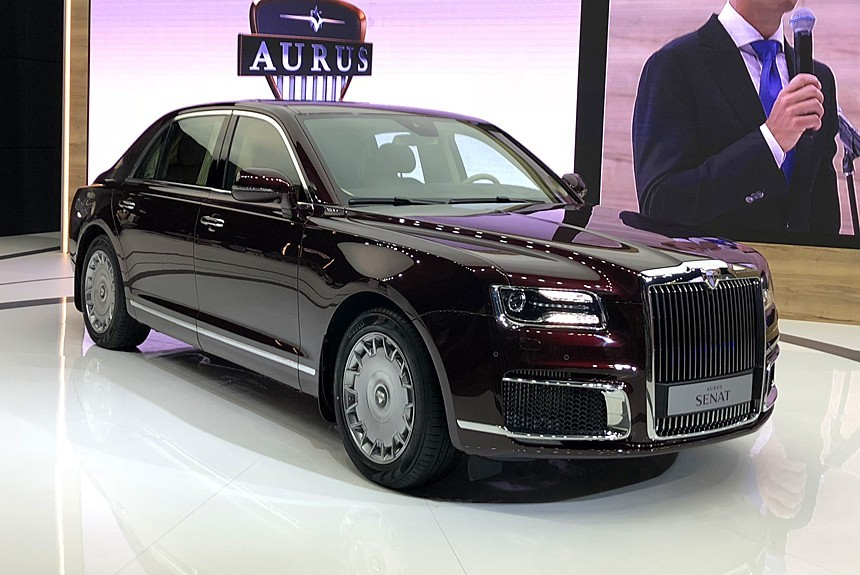

Сегодня кузов «седан» ассоциируется преимущественно с трёхобъёмными кузовами, но исторически многие седаны были двухобъёмными; примеры — практически все седаны выпуска до конца 1930-х годов и седаны-фастбэки,
в частности — ГАЗ-М-20 «Победа».
Заднее стекло на седане практически всегда жёстко закреплено в проёме и не опускается/не поднимается, хотя спинка заднего сиденья может быть либо оснащена лючком,
либо откидываться (целиком или по секциям) для перевозки длинномерных предметов.
Хардтоп-седан Mercury Monterey 1963 года с опускным задним стеклом Breezeway
В 1960-е годы в США на автомобилях марки Mercury существовал уникальный тип кузова на базе седана (и хардтоп-седана) с фирменным названием Breezeway (см. илл. справа),
имевший в раннем варианте опускающееся заднее стекло (движущееся вверх-вниз по направляющим, как подъёмные стёкла боковых дверей; задняя стойка крыши при этом имела обратный наклон,
а само стекло было расположено почти вертикально), а затем — откидное заднее стекло с электроприводом,
нижняя кромка которого немного выдвигалась наружу для обеспечения проточной вентиляции салона, подобно задним боковым стёклам многих двухдверных автомобилей.
Седаны традиционно популярны в Северной Америке[источник не указан 379 дней], причём до 1950-х — 1960-х годов двухдверные седаны были распространены в не меньшей степени, чем четырёхдверные.
Во второй половине 1950-х — 1960-е годы седан в Северной Америке отошёл на задний план, так как основным типом автомобильного кузова стал двухдверный хардтоп, однако в 1970-х, после упадка хардтопов,
популярность вновь завоевали седаны, причём теперь уже в основном четырёхдверные,
на которые там до самого недавнего времени приходилась основная масса выпуска легковых автомобилей (в последнее десятилетие их существенно потеснили кроссоверы — с середины 2010-х их в США стали продавать больше, чем седанов).
Наряду с четырёхдверными, на североамериканском рынке до сих пор периодически встречаются и двухдверные седаны, как правило из маркетинговых соображений получающие фирменное обозначение «купе».
Opel Rekord A. В Европе 1960-х годов двухдверные седаны даже в среднем классе были сравнимы по популярности с четырёхдверными.
В Европе вплоть до второй половины 1960-х — начала 1970-х годов также были очень популярны двухдверные седаны, как менее дорогие,
и среди автомобилей класса «Запорожца» или «Москвича» их было большинство (наиболее известные примеры — Volkswagen Kafer, FIAT 600, практически все ранние модели Opel Kadett и многие другие массовые «народные» автомобили).
Среди автомобилей европейского «среднего класса», типа Opel Rekord и «старших» серий Ford Taunus, двухдверные седаны по популярности были сравнимы с четырёхдверными.
Opel Ascona C — один из последних европейских двухдверных седанов.
На протяжении семидесятых годов двухдверные — а в малом и даже среднем классе и четырёхдверные — седаны были вытеснены в Европе более практичными хетчбэками, трёх и пятидверными соответственно,
причём этот процесс начался с Франции, где уже в конце шестидесятых на хетчбэки приходилась большая часть выпуска легковых автомобилей,
а окончательно европейский стандарт автомобиля малого класса был задан германским хетчбэком Volkswagen Golf.
Последние вновь разработанные двухдверные седаны в Европе массово выпускались в начале восьмидесятых годов: Ford Taunus TC, Audi 80, Opel Ascona C и некоторые другие.
Даже четырёхдверный седан в восьмидесятые годы начал казаться в Европе устаревшим типом кузова;
так, у Ford Sierra и Ford Scorpio базовым типом кузова был именно трёх- и пятидверный хетчбэк, а четырёхдверные седаны появились в производственной программе лишь в середине их выпуска.
Между тем, впоследствии оба типа кузова заняли на европейском рынке свои чётко очерченные ниши.